うちの子がハーネスを付けたなら [梅吉]
palpalさんがナノくんときなこちゃんのお散歩デビューに向けて奮闘しているブログ記事に刺激を受けて
我が家でも放置状態だったハーネスに再チャレンジ！
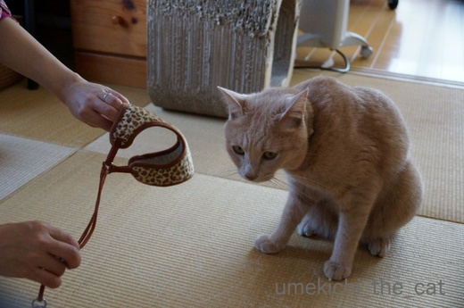
どうですか梅吉さん。
ちっさい頃に付けたの覚えてますか？
あの頃は本当に付けただけでリード紐にじゃれまくって
これを付けてのお散歩なんて絶対に無理！と諦めちゃいましたが
大人になった今はどうでしょうか。
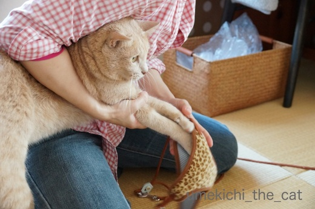
さあさあ、手を通してくださいな。
これを付けてお外デビューなんて出来たら
にゃんことしてのにゃん識が広がりますよー。
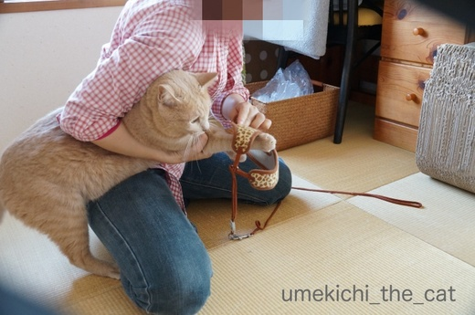
なんでそんなに腰が引けてるんですか。
おかーさんがこんなに足開いて奮闘しているのにぃ。
・・・・・・・・・・・
この後梅吉、逃走(꒦ິ⌑꒦ີ)
大人になったらハーネスに手を通すことすら出来なくなりました。
もしや、と期待してたのに。
という事で、勝手に連動企画「うちの子がハーネスを付けたなら・失敗編」でしたwww
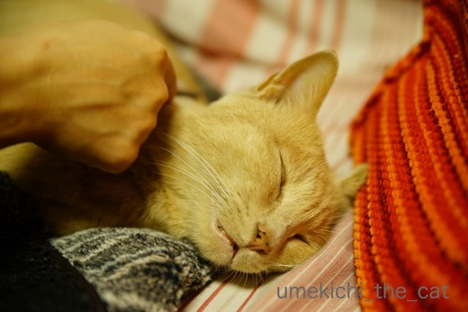
おかーさんのブログネタに付き合わせれた梅吉さんには
首輪を外してお詫びのグラッシング（コーミング？）。
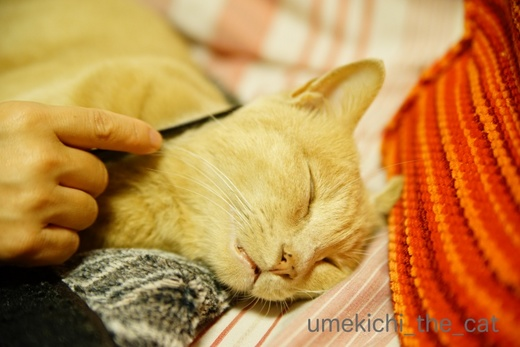
魂がどっかに飛んでます^^;
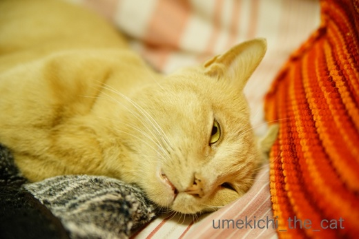
でも止めると薄眼を開けて睨むんですよ。
 ↑ガブッと一押し↑
↑ガブッと一押し↑
日曜日は法事で札幌に日帰りして来ました。
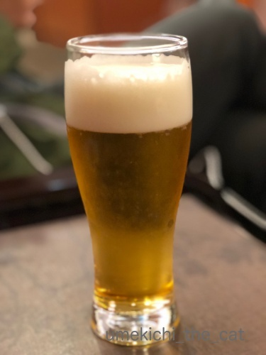
朝早く家を出てラウンジで朝ビール。
ma2ma2さん的だなっ( *´艸｀)
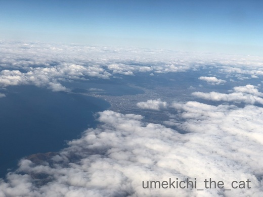
北の大地が見えて来ましたよー。
空港のある千歳市付近、札幌市近郊、見える山々は冠雪していました。
この日の前日は道内悪天候だったので積もったのかな？
時期から見ると山に降った雪は根雪になるでしょう。
札幌の端っこ、定山渓では積雪による車の事故のニュースもありました。
この時期は紅葉も終わってほとんどの木は落葉。
冬枯れの景色が広がって寒いだけでなんだかうら寂しい・・・
雪が積もると温かく感じて（そうなんですよ！）広がる雪原が綺麗なんですけどねー。
今街中にある色といえばこの赤い実くらい。
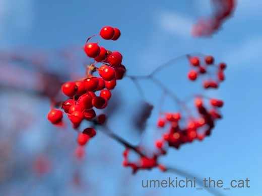
ナナカマドの実です。
冬の陽を浴びてツヤツヤ光っていましたよ。
くすんだ色合いの風景の中で目立っていたのはナナカマドの赤と雑木林の白樺の白い幹。
白樺は関西では見ない樹なのでうら寂しい中にも、なつかしうれしい風景でした。
我が家でも放置状態だったハーネスに再チャレンジ！
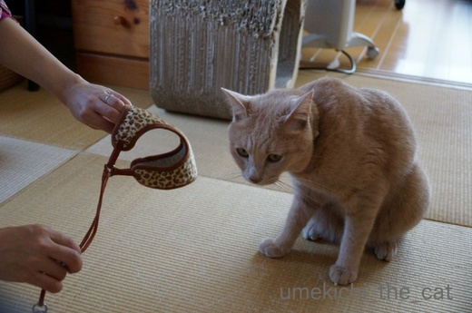
どうですか梅吉さん。
ちっさい頃に付けたの覚えてますか？
あの頃は本当に付けただけでリード紐にじゃれまくって
これを付けてのお散歩なんて絶対に無理！と諦めちゃいましたが
大人になった今はどうでしょうか。
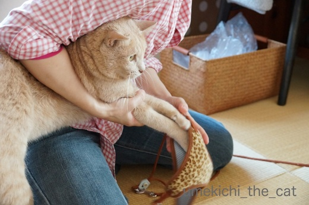
さあさあ、手を通してくださいな。
これを付けてお外デビューなんて出来たら
にゃんことしてのにゃん識が広がりますよー。
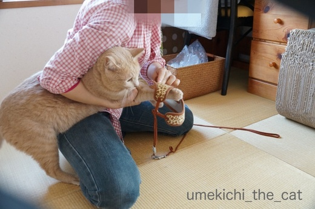
なんでそんなに腰が引けてるんですか。
おかーさんがこんなに足開いて奮闘しているのにぃ。
・・・・・・・・・・・
この後梅吉、逃走(꒦ິ⌑꒦ີ)
大人になったらハーネスに手を通すことすら出来なくなりました。
もしや、と期待してたのに。
という事で、勝手に連動企画「うちの子がハーネスを付けたなら・失敗編」でしたwww
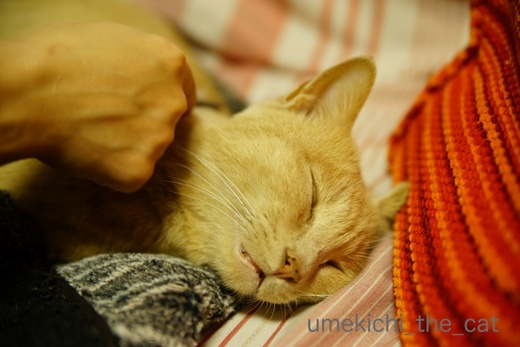
おかーさんのブログネタに付き合わせれた梅吉さんには
首輪を外してお詫びのグラッシング（コーミング？）。
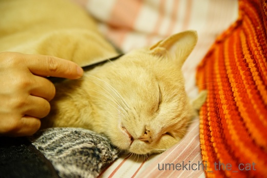
魂がどっかに飛んでます^^;
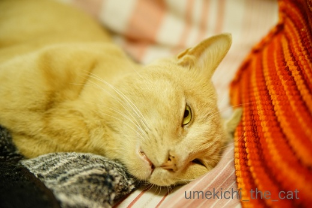
でも止めると薄眼を開けて睨むんですよ。
日曜日は法事で札幌に日帰りして来ました。
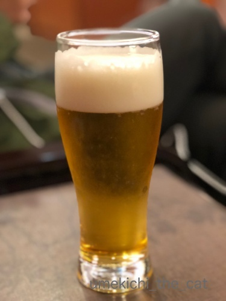
朝早く家を出てラウンジで朝ビール。
ma2ma2さん的だなっ( *´艸｀)
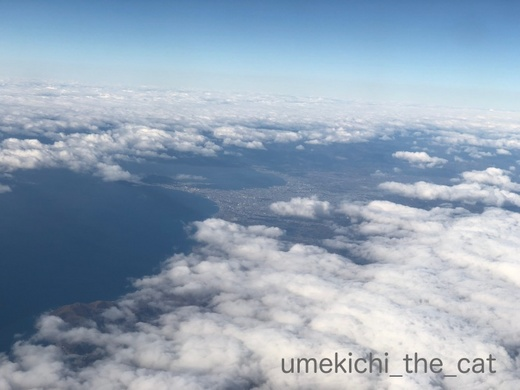
北の大地が見えて来ましたよー。
空港のある千歳市付近、札幌市近郊、見える山々は冠雪していました。
この日の前日は道内悪天候だったので積もったのかな？
時期から見ると山に降った雪は根雪になるでしょう。
札幌の端っこ、定山渓では積雪による車の事故のニュースもありました。
この時期は紅葉も終わってほとんどの木は落葉。
冬枯れの景色が広がって寒いだけでなんだかうら寂しい・・・
雪が積もると温かく感じて（そうなんですよ！）広がる雪原が綺麗なんですけどねー。
今街中にある色といえばこの赤い実くらい。
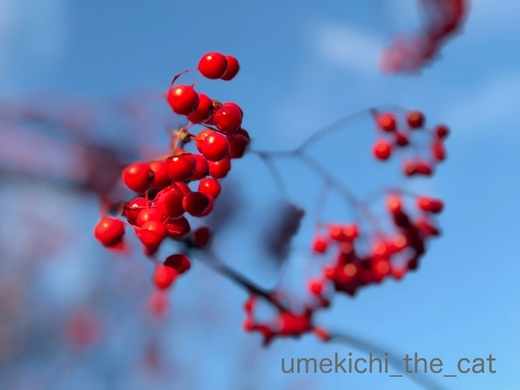
ナナカマドの実です。
冬の陽を浴びてツヤツヤ光っていましたよ。
くすんだ色合いの風景の中で目立っていたのはナナカマドの赤と雑木林の白樺の白い幹。
白樺は関西では見ない樹なのでうら寂しい中にも、なつかしうれしい風景でした。

カフェオレ色の梅吉

梅吉 2023年8月10日 永眠


梅吉と出会った譲渡会

犬猫の理由なき殺処分ゼロ
妄想広告
UMEKICHI 光

爆発的に早い！
時々攻撃的！
Thanks to Mr.Boss365
爆発的に早い！
時々攻撃的！
Thanks to Mr.Boss365

札幌に日帰り出来るとは驚きです。
梅吉さんは何だか災難だったみたいですね。大好きなおうちがいいんだよね~。
by zombiekong (2017-11-14 16:35)
梅吉さん！！思いっきり抵抗していますね(;^_^A
安心、安全なお家の中が一番ですかね♪
梅吉さんがとても気持ち良さそうに！！
手を止めると起きる（笑
それじゃあ止められませんね！
by きぃ (2017-11-14 16:44)
にゃはは！自由を満喫している梅しゃんは、もう、こんなんいややー、なのね。
(≡^∇^≡)ﾆｬﾊﾊ
でもでも、その先には新しい世界が待っているのにね。忘れた頃に、甘～い言葉で褒め殺して、「きゃあ！似合う♡」って。楽しみにしています。
札幌、お仕事＆プライベートで何度が伺ったけど、良い想い出しかありません♪
セブンイレブンの野菜スティックですら、美味しかった！
by Ginger (2017-11-14 18:24)
梅吉君、かなり抵抗したのね(笑)
お散歩はとってもムリそうですねー^^;
まぁ、おうちが快適だもの！あのおうちとっても快適だもの！(笑)
札幌日帰りおつかれさまでした。
飛行機での日帰りは疲れますよね。ビール美味しそう^^
そうそう。この時期の北海道は
いちばん寂しい季節だよね。雪が降ればまた綺麗な北海道になるんだけどねー。
白樺の木は私も観ると郷愁の念にかられるよー。
by リュカ (2017-11-14 19:55)
ウチは、ここ2、３年ハーネスを着けていないですが、嫌がりました:-)
着けた後も嫌がっていました:-)
着けるコツは、ハーネス形状にも寄りますが、床に広げて脚だけ通しちゃうと、楽かもです。
by tama (2017-11-14 20:33)
あはは～やっぱり色違いだ(*^▽^*)
ウチのお蔵入りハーネスはグレーです。
子猫の頃は誤魔化せても、大人になったら警戒するし知恵はつくしで、さらに装着が難しくなったのはウチも同じです・・・(-_-;)
サッポロは日帰りできるんだ～。
我が家はは函館。
昼前に飛んだ飛行機が夕方帰ってくるのが基本なので、現地滞在が2時間ぐらいになっちゃいます。無理だな～(^▽^;)
by ゆきち (2017-11-14 21:08)
梅吉さんハーネス絶対に拒否ですね！
ラウンジで飲むビールは何故こんなに美味しいのでしょう(^^)
テーブルの色からJALのラウンジでしょうか！
by ma2ma2 (2017-11-14 21:11)
梅吉さん、ハーネス苦手なんですね。
まあウチのもそうですけど。^^;
仮に無理にハーネスを着けても、「うう。どこかに連れて行かれる」ってな顔してオドオドしてしまいます。
札幌は行ったことありませんが、日帰りってなんかすごいですね！
この時期、飛行機は揺れませんでしたか？
by yes_hama (2017-11-14 21:57)
用足を通して背中でパチンのタイプですか？OR頭からいれるタイプ？
両足から入れるタイプの方がつけやすいですよ。ロッキーもハーネスしてた頃はそのタイプしか無理でした。
by みぃにゃん (2017-11-14 22:14)
ハーネスに奮闘している姿が可愛いです。
拒絶している梅吉さんもいじらしいです。
こんな写真が見たかった(^-^;
和ませていただきました(^^)
by riverwalk (2017-11-14 22:28)
すっごく嫌がってますね！！梅吉さん！！
うちは、ハーネスあんまり嫌がらないと言うか、
ハーネスは付けてくれるけど、動かない子がほとんどですね～ｗ
月見と操と暦だけが全然平気みたいです！！
by sumi-cyan (2017-11-14 23:21)
オトナになってからだとハードル高そう。慣れでしょうけどね。
家の末っ子も、小さい頃は病院帰りによく近所のジャングルをお散歩しました。
（下ろすと鳴くのでずっと抱っこでしたが・・・）
一緒にお散歩できたら楽しいでしょうねぇ〜（*´∀｀*）
梅吉くん、、、腰が引けてます^^;
法事おつかれさまでした。
法事とはいえ・・・北海道いいな♪空港ビールいいな♪（笑）
by Ja-Kou66 (2017-11-15 00:11)
梅吉くん、腰がひけてるのカワイイ～。
とってもイケてるハーネスなのに、
なにわの梅吉くんでも、そーいう気分のときが
あるんだよね＾＾
ちぃさんが梅吉くんをつかまえてる姿が
またいい味出してます～( ´∀｀ )
by マーヤ (2017-11-15 01:01)
普通はこうでしょうね。
途中で止めてなかったら
お散歩できたかも？＾＾；
by ぽちの輔 (2017-11-15 06:53)
うちもまたいずれは猫を飼いたいと思ってますが、その時は完全家猫にして、ハーネスでお散歩でしょうか・・・。
やはり半外猫は危険が多いです。
by kou (2017-11-15 07:35)
ハーネス、うちにもかつてありました。
うちの場合、装着はできるんですけど、その後がね、どのコも石化！
香箱座りに近い形で座ったまま立とうともしないし、
ムリに引っ張ると寝そべった状態で引きずるようになるので断念、
いつぞやの断捨離の折に処分しました。
コーミング中の梅吉くん、魂、どこに行っちゃった？ってお顔ｗ。
手を休めたときの催促の睨みは薄目ゆえに迫力満点ｗｗ。
by ハリネズミ (2017-11-15 07:42)
なるほど、どこのお家のにゃんこもハーネスは苦手なんですね(^_^;)
腰引けてる写真はめっちゃ笑えます！！！
by よーちゃん (2017-11-15 08:26)
梅吉はん、あかんたれやな〜！
ウチは子どもの頃にハーネスは卒業して(いや、すぐにピチピチになっただけ）今は首輪にリードでOKや！！そんなウチにみんな振り返るねんで〜！(私は恥ずかしい）
梅吉はんもかっこいいハーネスでお母はんと散歩したらご近所さんの人気者や！！
ウチとも一緒に散歩行こ〜♪
と、姐御も申しておりますので(≧∀≦)
めげずにレッツトライ！
梅吉さん、ご協力の程よろしく〜(^^)/♪
by くつしたにゃん (2017-11-15 08:59)
ハーネスチャレンジ～～!!そっか～ダメだったか(:_;)めっちゃ後ろ脚に重心乗ってますね。うちもきなこは再チャレンジすらままならない状態ですよ(T_T)
ハーネスやっぱり色違い(^^♪
by palpal (2017-11-15 14:28)
おかーさん！これはプロレス技じゃないですよねｗ
梅吉くん、めっちゃ腰が引けてる～(≧▽≦)
失敗しても可愛いですよ。
北海道、日帰りお疲れ様でした♪
梅吉くんの熱烈歓迎受けたかな？
by emi (2017-11-15 14:48)
梅吉さん、腰引けてますね～＾＾；
‥うちも、そういえば、ハーネス買ったことはありました！
グルングルンと何か別な生き物のように高速回転して、逃げられましたー。
まあニャンコは、普通は無理ですよね‥＾＾；
日帰り北海道！？
白樺は綺麗でしょうね＾＾
うちも白樺を植えたことあるんですが、あったかすぎたようです＾＾；
by sana (2017-11-15 18:58)
梅吉さん、腰が引けちゃってますねぇ(⌒-⌒; )
うちも前に大御所とニケにハーネストライしましたが、
石になって伏せをしたまま動かないORゴロゴロ転がって紐を絡ませる(*_*)
で、諦めました(ｰ ｰ;)
そしてガールズはハーネスを見ただけで逃げるようになりました´д` ;
先代猫はかみさんに抱っこされてるとどこでもOKだったので
散歩猫したかったんですけどねぇ(⌒-⌒; )
by ニッキー (2017-11-15 19:00)
『なんでそんなに腰が引けてるんですか。
おかーさんがこんなに足開いて奮闘しているのにぃ』って、ちぃさん
面白すぎます（笑）
お外の散歩、ナノ君から伝染すると楽しいでしょうにね〜
諦めましたか？
by kiki (2017-11-15 22:17)
zombiekongさん＞
単に用事を済ませるだけなら行けます！
今回は空港とおっとの実家を往復しただけでした。
観光で行くならせめて一泊はしたいですよね＾＾
って広い道内なのであちこち行こうと思ったらそれじゃ足りませんw
きぃさん＞
お外には興味津々なので単にハーネスが気に入らないようで・・・^^;
ハーネス＝お外が梅吉の頭の中で結びついていないので無理もありませんが。。
首輪を外してのブラシは格別気持ちが良いみたいです＾＾
Gingerさん＞
「おそとにいくなら このままいくでー」なのでしょうね^^;
どこ行っちゃうか分からないのでそれは勘弁なのですがw
梅吉、このハーネス似合うんですよー。
幼い頃にハーネス着用の写真を撮らなかったので
お散歩は無理でも写真だけは撮りたい！再チャレンジしますともっ！！
リュカさん＞
我が家を知っている方に言われると「むふっ♡」っとしちゃいますー。
梅吉の場合、お散歩は大好きそうなんだけど（実際ベランダ大好きだし）
体に何か着けられるのが気にくわない感じw
ハーネスのつけかたのコツを教えてもらったので再チャレンジはしますよ(^_－)☆
札幌日帰りは一日中乗り物に乗っていた感じ。
乗り物と寒さで縮こまって体がバキバキになりました。
でも久々にストーブで背中炙りしてきたwwwよかったわ〜。
tamaさん＞なるほど！！うちのハーネスの形状ならその方法が良さそうです！
やってみる〜。（ただいま記録係出張で不在のため後で^^;）
うちは首輪をしているので首輪もハーネスも大して違わないじゃない？
とも思うのですが（違うかw）・・・
ゆきちさん＞
（色は違うけど）ゆきちさん、palpalさん、ウチとおソロですねー(≧▽≦)
tamaさんに教えていただいた方法で懲りずにまたトライして見ます！
函館便は本数が少ないですものね。
千歳から行こうとしても効率悪いし。
時間さえあれば（函館までは）新幹線一本で行けるようになりましたが
あれは観光用ですよねー。帰省には使えないw
ma2ma2さん＞
腰の引けかたがハンパなかったです^^;
さすが！そうです伊丹のJALのラウンジでーす。
狭くてお酒の種類が少ない・・・
帰りは千歳で竹鶴ハイボール飲んじゃいました＾＾
yes_hamaさん＞
ワンコのようにハーネス見せたら「わぁ♡」って喜ぶにゃんこを
目指していたのに・・・
大体のにゃんこは嫌がるようですね^^;
機内アナウンスで「揺れるかもー」と言われたので
ちょっとドキドキしていたのですがお陰様で揺れることなく
着陸しましたm(_ _)m
by ちぃ (2017-11-16 18:33)
あらら、お散歩作戦しっぱでしたか。
やっぱり犬のようにはいきませんね。
by 響 (2017-11-16 20:29)
ハーネス、断念、残念、ええねん♪(乗りきってない)
梅吉君の心の声が聞こえてきました~
ちぃさんが梅吉君の前脚をつかんでハーネスに入れようとする様が、私がわんんこにレインコートを着せようとする様にダブり、「とにかく大変よね~」という共感が湧いてきました。わんこも微妙に暴れて顔のところから前脚出したり…。汗だくの割に得るものが少なし…。
by BillK-ko (2017-11-16 21:33)
みぃにゃんさん＞
両足から入れるタイプです！が、それでも入れるの大変です・・・^^;
にゃんこってするり、ぬるりと逃げるのですw
riverwalkさん＞
大変はしたない格好で失礼いたしました^^;
でも、がんばってるな！私！！と
自分で見ていてニヤニヤしちゃいましたw
和んでいただけて何よりです^^
sumi-cyanさん＞
ハーネスを嫌がらないで着けさせてくれるなんて良い子だー！
梅吉は着けるのも嫌、着けたら今度はぐりんぐりん転げ回って
まともに歩きません・・・^^;
Ja-Kou66さん＞
大人になって聞き分けが良くなるかと期待したのですが・・・^^;
ヒモにじゃれまくっても良いから子供の時にもっと着けておくんだったなー。
近所のジャングルのリアル木で爪とぎさせてあげたかったw
法事、6〜7月の気候の良い時にしたいものです・・ってそれは無理ですよね( *´艸｀)
マーヤさん＞
大阪のおばちゃんなのでアニマル柄に惹かれましたw
関西では売れ筋の柄なのかなぁ・・・
ゆきちさんpalpalさんと色違いなのです( *´艸｀)
梅吉をくわっと捕まえているの図、なんて格好だい！と思いましたが載せちゃったwww
ぽちの輔さん＞
ハーネスをつけたらヒモにじゃれついてまともに歩いてなかったと思いますw
どーやってもお散歩デビューへの道は厳しいのです(-_-メ)
kouさん＞
完全室内飼い、外に出してもベランダまでが良さそうですね。
kouさんのお家まわりのお話を聞くとなおさら・・・^^;
ハリネズミさん＞
あはは(≧▽≦)化石になっちゃう子が多いんですねー。
梅吉はハーネスをつけたらつけたで変なスイッチが入って
ぐりんぐりん転げ回ってヒモにじゃれついて・・・
これを外でやられたらさらに大変なことになるので
どのみちお散歩は無理ですわwww
ブラッシングをするのにいくつもブラシを買ってみたのに・・・
どれもお気に召さなくて。
行き着いたのが100均のクシでした。
安上がりな子でーす。気持ち良さそうでしょー。
「やめると うらむで」って感じですよね＾＾
よーちゃん＞
わんこみたいに「わーい！」と寄って来てくれるニャンコは
いないと思われます。お外は好きなのにね！
梅吉、ワタクシともに面白ポーズの秀逸な写真だと自負しておりますwww
くつしたにゃんさん＞
姐さんは りーどのみなんか！ なんやぷろっぽくて かっこええわぁ
わし はーねすはあかんけど ばびゅーんって とべるで
姐さんとこまでも ひとっと「１じぇ８いいいいいいいい」←梅吉が打ったよ！
もとい ひっと飛びやで と言いたかったようですにゃ♡
くつした姐さんにリードつけてお外にいたら色んな人に話しかけられませんか？
私なら話しかけて写真撮らせてもらって・・・
毎日同じくらいの時間にお家の前通ると思う！ストーカーレベル( *´艸｀)
by ちぃ (2017-11-17 15:11)
palpalさん＞
勝手に連動企画、失礼しました〜。
迷惑そうな顔、やる気のない手、引けた腰、全身で「いやや！」と言われましたw
幸いハーネスを見ても逃げはしないのでリトライの余地はありそうです。
散歩しなくてもいいからハーネス姿だけでも撮りたいのよー。
梅吉大迷惑(≧ω≦｡)
この柄、関西のおばちゃんにウケてるのねー！ゆきちさんもおソロ＾＾
emiさん＞
おかーさんが梅吉にヘッドロックをかましている図、ではありませんですＯ(≧▽≦)Ｏ
でもすごーくそう見えます！それ以外に見えなくなって来た！！
長時間家を空けて帰った時の梅吉の反応は、
玄関で待っていて私たちの匂いを嗅ぎまくり
どどどどどどーっと走り回って・・・
自分でも何したいんだか分からなくっておもちゃをしばいたり
窓枠を駆け上がったり（やめてー！）。
喜んでくれているのは確かなので梅吉の気がすむまで
一緒に走ったりおもちゃを投げたり私も忙しいですw
でも嬉しい反応だよ(^_－)☆
sanaさん＞
ハーネスをつけると化石化するニャンコが多い中
やっと梅吉と同じ反応をする子が！
高速回転しながら紐を体に巻きつけるので怖いですよねー。
それをお外でやられたら・・・危険なので散歩は諦めますー。
白樺は夏も良いですが冬は一層美しさが際立つような気がします。
北限はどのあたりなんだろう・・・
苗が手に入っただけでもびっくりですけど！
ニッキーさん＞
化石化orゴロゴロ化に分かれるのかと思っていたら両方こなす
ニャンコがいたとは・・・
やっぱりにゃんこは奥が深いですね！！
梅吉も抱っこで外に出られるのですが「あっちにいくにゃー」と
抱っこを振り切って走り出すのは間違いないので止めておきます (⌒_⌒;
kikiさん＞
写真を見て「凄い格好だなー」と思ったのですが
ブログに載せちゃいましたww
我が家らしい写真だな、と思って・・・ (^▽^;)
ハーネスをつけるとぐるんぐるん転がってまともに歩かないので
お散歩は無理だと思っています。
でもハーネス姿の写真を撮りたいのでリトライしますよ(^_－)☆
響さん＞
梅吉、犬っぽいところが沢山あるので
お散歩もできるかなーと思ったのですが・・・
変なところで猫らしさを発揮されちゃいましたwww
BillK-koさん＞
「ねん」で韻を踏んで来ましたね！
私としては大好きなお外に行けるのに
ハーネス嫌いって「なんでやねん」でした(≧ω≦｡)
ちゃちゃくんも腰を引きまくってイヤイヤするんですねー。
リードはいいけどお洋服はいやなのかな？
おっとこらしく雨に濡れながら散歩するのがお好きなのかしら。
やっぱり、シブいわー(≧▽≦)
by ちぃ (2017-11-17 15:43)